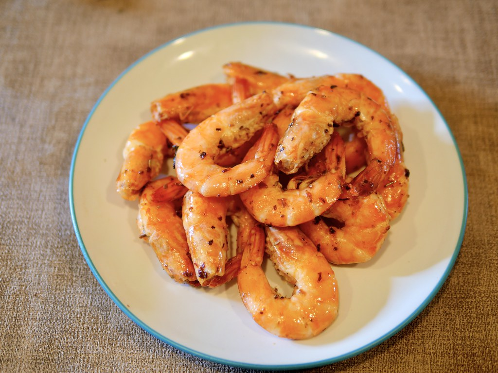

<！DOCTYPE html>
<html>
<head>
<title>文字+圖片操作</title>
</head>
<body bgcolor="B9B9FF">
<h1 align="center">文字+圖片操作 學號91034121 姓名:朱哲輝</h1>
<table border ="0px">
<tr>
<td></td>
<td></td>
<td></td>
<td></td>
</tr>
<tr>
<td align="center"><a href="index.html">老皮嫩豆腐</a></td>
<td align="center"><a href="2dex.html">胡椒蝦</a></td>
<td align="center"><a href="3dex.html">芋頭西米露</a></td>
<td align="center"><a href="4dex.html">糖醋排骨</a></td>
</tr>
</table>
<h2>糖醋排骨</h2>
<table border ="3px">
<tr>
<th>食材</th>
<td>排骨1000g</td>
<td>乾蔥3顆</td>
<td>蒜頭4瓣</td>
<table border ="3px">
<td>薑片3片</td>
<td>熱水500g</td>
<td>醋200g</td>
<td>糖100g</td>
</tr> 
</table>
<h3>做法<h3>
<ol>
<li>排骨解凍，用鹽浸洗排骨，排出血水，再過清水，隔水盛起備用。</li>
<li>凍水加入排骨加熱汆水，沖洗乾淨，用廚紙索乾水份。</li>
<li>用油爆香乾蔥、蒜頭和薑片，加入排骨煎一煎表面。</li>
<li>加入糖醋汁材料，排骨上色後贊酒。</li>
<li>加入熱水，水份到排骨表面，翻滾後蓋蓋用細火炆半小時</li>


</body>
</html>
